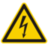
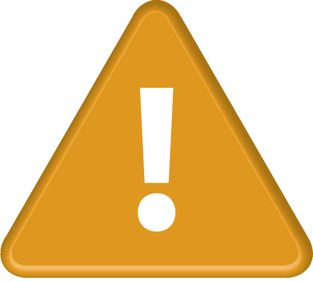
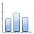

User Manual¶
Table of Contents
Introduction¶
The IonControl program is based around the following concepts, which are summarized below:
Pulse Program. The pulse program is a “pythonic” text file which is executed by a microcontroller implemented on the FPGA. The pulse program controls:
- The timing of all TTL outputs
- Counting on TTL inputs
- Monitoring of ADC inputs
- programming of DDSs
- programming of DACs
- behavior of FPGA PI loops
The pulse program can execute standard control structures, such as loops and conditionals, and can do simple math. It can also read data from on-board RAM.
All of this is implemented in firmware (known as a “bitfile”) which is written to the FPGA. At the moment (10/14/2015), bitfiles have been produced for the following two FPGA modules:
- Opal Kelly XEM6010-LX45
- Opal Kelly XEM6010-LX150
Other FPGA modules could in principle be added at some point in the future.
Scans. One dimensional scans are controlled by three separate interfaces:
- The scan interface allows a one-dimensional scan over any parameter defined in the pulse program, or any other instrument connected to the computer that is defined in the software. At each point in the scan, data is returned by the FPGA. The results of a scan are saved to a text file, and also registered in the Measurement Log.
- The evaluation interface determines how that data is plotted. An evaluation is a defined method for taking a set of data and reducing it to a single point for plotting, such as “mean” or “discriminator” or “parity.” As many evaluations as needed can be added. The plot windows are completely reconfigurable; you can add as many plot windows as necessary, and each evaluation can be directed to any plot window.
- The analysis interface determines how the data is fit at the conclusion of the scan. In addition, the analysis interface can push the results of a fit to a global variable, which can in turn be referenced by any part of the program. In this way, calibrations are straightforward.
Dedicated Counters. The dedicated counters interface allows continuous monitoring of the counters and ADCs connected to the FPGA. It displays counts whether or not a scan is running, and is therefore useful for continuous monitoring. It also has an interface for automatic ion loading.
Scripting. The scripting interface allows for the creation of extremely complex, automated experiments. It executes Python scripts, but adds a number of commands which allow control over the experiment.
A few general points about the interface:
Units¶
Almost all quantities referenced in the program have units. This is for the simple reason that real physical quantities have units, and using them avoids any ambiguity. This means a few things:
quantities can be typed as 0.365 MHz or as 365 kHz or as 365000 Hz, they are all equivalent.
in fields which allow mathematical expressions, units are respected – you could write something like:
7 kHz + 1/(100 us)
which would equal 17 kHz. This can be useful for writing things like:
ExpectedPhotonNumber = CoolingTime * ExpectedFluorescenceRate
Here CoolingTime likely has base unit seconds, ExpectedFluorescenceRate has base unit Hz, and ExpectedPhotonNumber is unitless, as expected. If CoolingTime changes, ExpectedPhotonNumber changes appropriately.
Global Variables¶
Global variables can be used almost everywhere throughout the program. In many cases it is far more useful to reference something to a global, rather than giving it its own value. If the same value will appear in more than one place, you are almost always better off setting it to a global.
GUI reconfiguring¶
The GUI is highly reconfigurable. Plot windows and almost all control windows (known as “docks”) can be resized, rearranged, tabbed on top of each other, closed, or pulled out as a stand alone window. The GUI configuration is automatically saved to the database. This means that when you close the program and reopen it, the GUI appearance will stay the same. Closed docks can be re-opened via the “view” menu. In the main experiment GUI, they can also be re-opened by right clicking on a dock header bar.
GUI controls¶
{kind=link}
The main Experiment GUI
When you first start the program, the main GUI consists of a central area with plot windows surrounded by various control docks, with an action toolbar on top. The effects of the different toolbar actions are:
- – start a scan
- This will run the scan set in the scan control dock, with the evaulation set in the evaulation control dock. When the scan concludes, it will run the analysis set in the analysis control dock.
 – pause a scan
– pause a scan- This will pause the scan wherever it currently is.
- – stop a scan
- This will stop the scan, but will still perform the analysis and register the scan in the measurement log.
- – abort a scan
- This will stop the scan, but will NOT perform the analysis or register the scan in the measurement log.
- – save GUI configuration data
This will save the GUI configuration to a new database file with the name “configuration_X.db” (where X is 001 the first time you hit save, then increments) which will be placed in the day’s data directory. This can be used if you want to take a snapshot of your GUI configuration which you can later return to. Each time you click save, a new file is created. To reload the GUI configuration, copy the saved file to ‘yourProjectDir/.gui-config’, and rename it ‘ExperimentUi.config’.
Note that this is not for ordinary saving of the GUI configuration – this happens automatically once a minute, and whenever the program is closed.
- – save experiment configuration data to an XML file
- This will save all the global variables, scan settings, evaluation settings, analysis settings, and pulse program settings to XML files. These files can be imported via File > Import XML. This is mainly useful if you want to move a large list of experiment settings between projects.
 – open the Dedicated Counters window.
– open the Dedicated Counters window. – open the Pulse Program window.
– open the Pulse Program window.-  – open the Voltage Control window.
- – open the Logic Analyzer window.
- – open the Measurement Log window.
 – open the Scripting window.
– open the Scripting window.- or – display if an exception occurred
- The will turn into a when an error occurs. If you click on it, you will see a list of all exceptions since the list was last cleared. You can clear the list, or clear individual exceptions.
- or  – display if a warning occurred
- The will turn into a when a warning occurs. Interface is the same as for exceptions.
-  – copy histogram to traces
- This will copy the last histogram from the most recent scan to the trace list together with the other traces. From there it can be saved or viewed later.
- – save all histogram from last scan
- This will save every histogram from the most recent scan to a file. It does not create an entry in the trace list. The filename used is specified in the scan control (see Scans).
- – add a plot
- This will add a plot window, which will available for any evaluation.
- – remove a plot
- This will remove an existing plot window. Note: “Scan Data” and “Histogram” (and “Timestamps” if enabled) cannot be removed.
- – rename a plot
- This will rename an existing plot window. The same plots which cannot be removed also cannot be renamed.
{kind=link}
{kind=link}
{kind=link}
{kind=link}
{kind=link}
{kind=link}
{kind=link}
{kind=link}
{kind=link}
{kind=link}
{kind=link}
{kind=link}
{kind=link}
{kind=link}
{kind=link}
{kind=link}
Projects¶
All of the program settings, GUI configuration, data, etc. are attached to a specific project. Oftentimes only a single project is necessary for a given lab. However, if for whatever reason you need to be able to switch between totally different configurations of the program, the project functionality will allow this.
Project Selection¶
When you start the program for the very first time, you will be asked to select a base directory. This will be the directory under which will be the individual project directories. Once you select a base directory, the project selection GUI will appear:

Project selection GUI.
Existing projects can be selected in the table, or a new project can be added by typing a name into the editor and clicking “create.” If “Set as default” is checked, the GUI will not be shown the next time the program opens. Instead, the selected project will be used. A different base directory can also be selected via this GUI.
This GUI creates a configuration file in the source directory: \IonControl\config\ProjectConfig.yml. This file contains three lines, specifying the base directory, the project name, and whether or not to show the project selection GUI the next time the program starts. The GUI can be bypassed entirely by editing this file directly. The GUI is simply an interface for editing the config file.
If you wish to see the project selection GUI the next time the program starts up, you can do so via the main control program by selecting File > Project. This will display the currently selected project along with its configuration, and give you the option to show the selection GUI on next startup. Alternatively, you can directly edit ProjectConfig.yml, and change showGui to True.
Experiment Configuration¶
Once a project is selected, the experiment configuration GUI will appear:

Experiment configuration GUI.
This GUI allows you to select what pieces of hardware or types of hardware are connected to the computer, and how it is configured. It also allows you to selectively enable or disable specific software features and establishes the connection to the database. For example, select Opal Kelly FPGA: Pulser from the “Available Hardware” drop down menu, then click  . This will add that item to the list of available hardware. A tab will appear with configuration data specific to that item. For the FPGA, click “Scan” to scan for Opal Kelly FPGA devices connected to the computer, which will populate the device drop down menu. Select from that menu which FPGA to use. Click “Upload” to upload the selected bitfile to the selected FPGA. Click “uploadOnStartup” to have the program automatically upload the bitfile whenever the program starts (this is normally not necessary).
. This will add that item to the list of available hardware. A tab will appear with configuration data specific to that item. For the FPGA, click “Scan” to scan for Opal Kelly FPGA devices connected to the computer, which will populate the device drop down menu. Select from that menu which FPGA to use. Click “Upload” to upload the selected bitfile to the selected FPGA. Click “uploadOnStartup” to have the program automatically upload the bitfile whenever the program starts (this is normally not necessary).
“Software Features” works the same way as does the hardware. Under “Software Features,” select Pulser and click . This has one configuration field, which is what piece of hardware to use for the pulser. Select Opal Kelly FPGA: Pulser from the dropdown. Other hardware/software features can be added similarly.
Each hardware and software item has an enable checkbox next to it. Unchecking this disables that item, and is functionally equivalent to removing that item completely by clicking  . The only difference is that if an item is removed, its configuration data is deleted. If an item is unchecked, its configuration data remains. Therefore, use the enable checkbox for items you wish to remove only temporarily.
. The only difference is that if an item is removed, its configuration data is deleted. If an item is unchecked, its configuration data remains. Therefore, use the enable checkbox for items you wish to remove only temporarily.
Under “Database connection,” type in the password you set up during Installation.
If “Set as default” is checked, the GUI will not be shown the next time the program starts.
This GUI creates a configuration file in the project directory: \YourBaseDirectory\YourProjectName\config\ExptConfig.yml. This file contains a list of hardware, software, the configuration of each, and the database connection. As with the project selection GUI, the experiment configuration GUI is a front end for editing this file. The GUI can be bypassed by editing the file directly. As with the project configuration file, if you wish to see the experiment configuration GUI on next program start after it was already set to default, you can do so via the main control program by selecting File > Project. Alternatively, you can edit ExptConfig.yml and change showGui to True.
Pulse Program¶
Once the configuration files have been setup, the main program opens. The first time the program runs, the pulse program window will also open. On subsequent runs, it will return to whatever state it was in when it was closed last. To open the pulse program window, click .
The pulse program window consists of four sections. The primary section is the text file itself, which is under the heading Pulse Program. The two sections Shutters, Triggers, Counters and Parameters are interfaces to set the variables which are declared in the pulse program. The Shutters, Triggers, Counters window is for settings binary variables, while the Parameters window is for setting all other types of parameters. Finally, the RAM Control window is for directly writing to the RAM on the FPGA board.
When a pulse program is saved (CTRL-S in the editor, or click ), the program attempts to compile it. If it fails, it indicates where and why it failed. If it is successful, it updates the parameters, shutters, triggers, and counters displays to match the pulse program.

The pulse program interface
The pulse program written here is run on the FPGA. It is compiled to a machine code that contains microcontroller instructions that are understood by the FPGA.
Pulse Program Syntax¶
variable types¶
- const
A constant value, which we typically use for things like DDS Channels, e.g.:
const DDSDetect = 0 const DDSCooling = 1
- parameter
A numerical value that is set by the user or by a scan. This is the main variable type which allows configuring the experiment. When the pulse program is saved, the list of parameters in the parameter window is updated.
The simplest parameter declaration would look like:
parameter CoolingTime
This initializes a parameter named “CoolingTime,” which will show up in the parameter table and as a scan target. You can also type:
parameter CoolingTime = 500 us
The effect of this will be to set CoolingTime to 500 us when you save the program and CoolingTime is added to the parameter list. However, that is the only time the 500 us value is read! Every subsequent time the program is run, the value of CoolingTime will be set via whatever is typed into the Parameters table, or via a scan. Therefore, this is to be avoided, as it can lead to confusion, and instead parameters should be declared without any value called out in the pulse program code.
A parameter can also have a device specific encoding. An encoding is a way of translating something like “200 MHz” into a frequency tuning word used to program a DDS. An encoding is written like this:
parameter <AD9912_FRQ> CoolingFreq
This means that
CoolingFreq, which is in MHz, will be converted appropriately to program an AD9912 DDS. Encodings are only necessary on a frequency that is actually written to a DDS. For example, the following is fine:const DDSRaman1 = 2 parameter RamanCarrierFreq parameter RamanDetuning parameter <AD9912_FRQ> DDSRaman1Freq set_dds(channel=DDSRaman1, freq=DDSRaman1Freq)
where in the parameters table,
DDSRaman1Freqis set toRamanCarrierFreq + RamanDetuning. OnlyDDSRaman1Freqneed have the encoding, as it is the only one which is directly written to the DDS, while the others are used indirectly.The following encodings are available:
- AD9912_FRQ
frequency to set an AD9912 DDS
- AD9910_FRQ
frequency to set an AD9910 DDS
- AD9912_PHASE
phase to set an AD9912 DDS
- AD9910_PHASE
phase to set an AD9910 DDS
- DAC8568_VOLTAGE
voltage to set a DAC8568 DAC
- ADC7606_VOLTAGE
voltage returned by the ADC7606 ADC
ADC_VOLTAGE
ADCTI122S101_VOLTAGE
- var
An internal variable. This is something that might change throughout the course of an experiment (unlike const), but which is set within the experiment rather than by the user. An example would be:
var experimentsleft = 100
where experimentleft is an internal variable, initialized to 100. (In the pulse program this is from, it is used to keep track of how many experiments are remaining). The difference between var and parameter is only in how they are treated by the GUI; var variables are not shown in the GUI as something to be scanned or set by the user. Also, normally there are programmatic changes made to vars, while parameters are not changed by the program unless they are being scanned. This is for clarity, though, not a requirement. As with parameters, vars can have an encoding.
Unlike parameters, vars often need to be initialized in the code, as they are not overridden from outside the code.
- shutter
A shutter is a binary variable, which specifies the state of every TTL output of the FPGA, whether every PI loop is on or off, and whether the DAC scans are on or off see (PI Loops for an explanation of the last two). When a shutter is added to the pulse program, a new line appears in the shutters window
counter A counter variable. When a counter is added, a new line appears in the counters GUI.
masked_shutter
trigger
address
exitcode